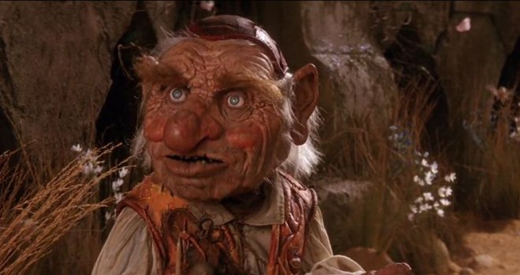
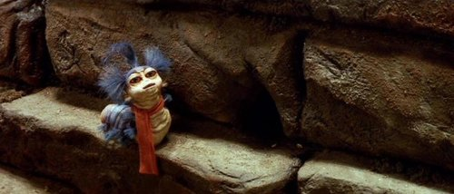

Comienza tu aventura en el laberinto
Caminas hacia el laberinto, pero no logras encontrar alguna entrada. Luego de una larga búsqueda conoces a Hoggle, un enano un tanto irritable, que te indica donde hay una puerta de entrada.
Una vez dentro, comienzas tu camino hacia el castillo de Jareth. Corres y corres por el largo pasillo. Las paredes se extienden ante ti sin doblar o cambiar de dirección o acabar.
Un pequeño gusano parlante con grandes ojos saltones asomó la cabeza entre los bloques, te saluda y te dice:
—No estás mirando bien, eso es. Está lleno de aberturas. Es sólo que tú no las ves. Las cosas no son lo que parecen en este lugar, no puedes dar nada por sentado. Hay una abertura justo delante de ti. Intenta atravesarla y escoge tu camino.—
